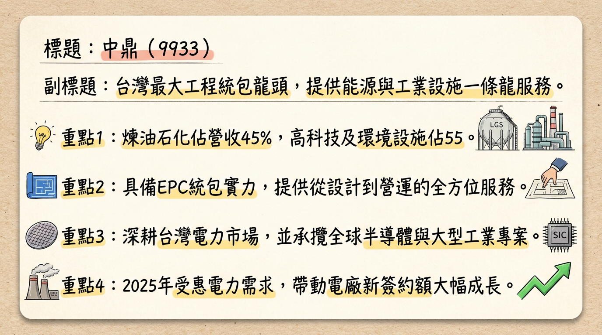
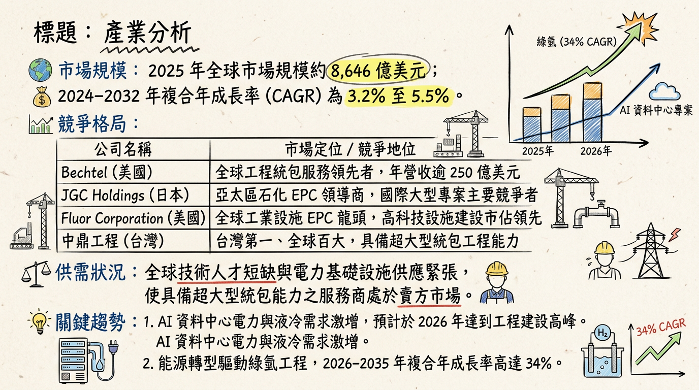
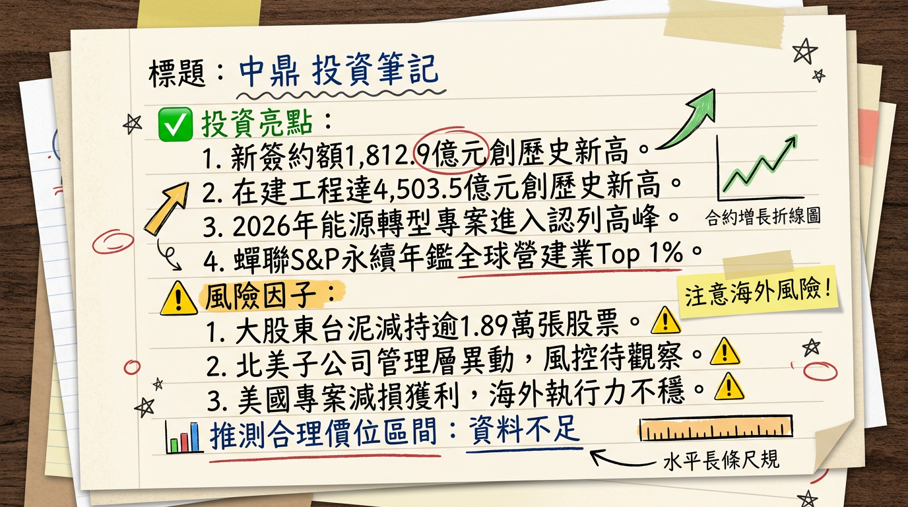

9933 中鼎 深度研究報告：利空出盡，迎來史上最強在建工程獲利修復期
報告日期： 2026-03-02
研究員： 頂尖台股分析師 (AI 整合)
評等： 買進 (Accumulate)
目標價： NT$ 41.0 - 43.5
## 一句話摘要
中鼎 (9933) 已走出 2025 年美國專案提列損失的陰霾，憑藉 4,503.5 億元歷史新高在建工程與能源轉型剛性需求，2026 年將進入營收與毛利率雙回升的獲利轉折點。
## 公司概覽
中鼎工程 (CTCI) 為台灣規模最大的統包工程公司 (EPC)，提供設計、採購、建造及營運一條龍服務。
營收結構與業務分布 (2025 H1 數據)
| 業務類別 | 營收佔比 | 核心專案類型 |
|---|
| 煉油石化 | 45% | 乙烯裂解廠、煉油設施、生質能源廠 |
| 高科技設施 | 19% | 半導體廠房、AI 數據中心機電、鋰電池工廠 |
| 電力/天然氣/水資源 | 36% | LNG 接收站、燃氣電廠、再生水/海淡廠 |
- 區域貢獻： 台灣 56%、海外 44% (包含中東、美國、東南亞)。
- 在建案區域： 台灣佔比高達 86%，顯示公司近期採取「深耕本土、精選海外高毛利案」之策略。
## 核心競爭優勢
能源轉型核心承包商： 台灣「增氣減煤」政策下，中鼎在 LNG 接收站（三接至七接）與複循環電廠擁有極高市佔率。
AI 與數據中心機電整合： 針對 AI 伺服器高功率需求，中鼎已具備液冷系統與機房機電整合技術，打入全球高科技供應鏈。
ESG 工程領導地位： 連續四年蟬聯 S&P Global 永續年鑑全球營建工程業 Top 1%，具備國際標案競爭門檻。
## 財務分析
1. 月營收趨勢表格
中鼎營收認列依工程進度而定，2026 年初因農曆春節與高基期因素出現下滑，但整體趨勢隨大標案進入趕工期而看好。
| 月份 | 營收金額 (億元) | 月增率 MoM | 年增率 YoY | 備註 |
|---|
| 2026/01 | 56.07 | -51.5% | -4.74% | 創 2021 年以來單月新低 (春節因素) |
| 2025/12 | 115.60 | +71.36% | -15.29% | 2025 年單月最高 |
| 2025/11 | 67.46 | +15.03% | -29.28% | |
| 2025/10 | 58.64 | -26.84% | -29.45% | |
| 2025/09 | 80.16 | +20.59% | -11.70% | |
| 2025/08 | 66.47 | +1.51% | -33.00% | |
2. 季度數據與年度趨勢
- 2024 全年： 營收 1,199.24 億元，EPS 2.43 元。
- 2025 前三季： 累計 EPS 為 -0.35 元 (主因 Q1 認列美國 BKRF 案 31 億元損失)。
- 獲利修復： 2025 Q3 單季 EPS 已回升至 0.85 元，本業獲利重回正軌。
## 法說會重點 (管理層 Guidance)
- 在建工程 (Backlog)： 截至 2026/02，金額達 4,503.5 億元 創歷史新高。
- 新簽約額： 2025 全年新簽約 1,812.9 億元，商機儲備極其豐沛。
- 潛在商機： 未來 12 個月可投標商機達 9,820 億元 (台灣佔 5,480 億、中東佔 3,090 億)。
- 未來展望： 預期 2026 營收挑戰 1,000 億元，且毛利率隨高毛利低碳專案佔比提升而改善。
## 券商觀點
| 券商名稱 | 目標價 (NT$) | 評等 | 報告日期 | 觀點摘要 |
|---|
| Fintel 綜合共識 | 43.65 | 中立/偏多 | 2026/02/24 | 最壞情況已過，2026 獲利回升 |
| MarketScreener | 40.98 | 優於大盤 | 2026/02/23 | 2026 EPS 預估 1.85 元 |
| 凱基證券 | 35.6 | 持有 | 2025/12 | 關注海外專案減損風險 |
| 元富證券 | 51.0 | 買進 | 2025/03 (⚠️過時) | 未考量美國案損失，僅供歷史參考 |
## 財報深度分析
1. 利潤率趨勢表格
| 指標 | 2025 Q3 | 2025 Q2 | 2025 Q1 | 說明 |
|---|
| 毛利率 | 9.28% | 7.66% | 11.20% | Q1 高毛利但因業外減損導致淨損 |
| 營業利益率 | 7.16% | 5.89% | - (異常) | 2025 下半年穩定回升 |
| 稅後淨利率 | 5.00% | 2.24% | -10.30% | Q3 獲利能力顯著修復 |
2. 營運效率與風險
- 負債比率： 81.8% (符合 EPC 行業高槓桿、高合約負債特性)。
- 法律風險： 應持續關注 三元能源 (台泥子公司) 46.25 億元火災訴訟案進度。
- 應收帳款： 2025 Q3 週轉天數降至 26.18 天，顯示踩雷事件後加強風險控管。
## 股權異動與資本結構
- 大股東減持： 台泥 (TCC) 於 2025/12 - 2026/02 累計處分逾 1.89 萬張，主因為資金調度，對中鼎基本面無負面影響。
- 經理人信託： 2026/02 李銘賢與蔡國隆分別信託轉讓 130 張及 75 張，屬正常稅務規劃。
- 可轉債 (99332)： 發行 60 億元，轉換價 51.8 元，目前股價遠低於轉換價，近期無稀釋股本風險。
## 產業分析 (EPC 市場)
全球主要 EPC 公司競爭比較
| 公司名稱 | 總部 | 核心優勢 | 2025 預估毛利率 | 在建工程 (億元) |
|---|
| 中鼎 (9933) | 台灣 | LNG、再生水、AI 數據中心 | ~9% | 4,503 |
| Samsung Eng. | 韓國 | 石化統包、中東市場 | ~8-10% | 規模極大 |
| 聖暉 (5536) | 台灣 | 半導體潔淨室 | ~18-20% | 規模較小，高毛利 |
| Fluor Corp | 美國 | 石化、採礦、模組化施工 | ~3-5% | 國際巨頭 |
## 近期催化劑 (Catalysts)
2026/03/09 董事會： 公布 2025 年度獲利與 2026 股利政策 (預期殖利率為關注焦點)。
新標案開標： 台灣五接、六接天然氣統包案後續進展。
AI 資料中心： 與鴻海等大廠合作之全球布局專案簽約。
## ⭐ 成長動能時間軸
- 2025 Q4 - 2026 Q1： 美國 BKRF 案重整核准，債權轉化為長期穩定資產，利空出盡。
- 2026 全年： 台灣電力需求激增，多項燃氣電廠進入施工高峰，貢獻營收。
- 2026 H2： 預計取得跨國 AI 數據中心冷卻系統工程合約。
- 2027 年： 碳捕捉 (CCUS) 與氫能示範廠案量化生產。
## 2026 展望：成長動能 vs 風險
1. 歷史最高 4,500 億在建工程，營收能見度達 3-5 年。
2. 能源轉型政策帶動之剛性商機 (LNG、電力)。
1.
缺工風險： 勞動力短缺可能導致工期延遲。
2. 法律訴訟： 三元能源火災求償案之潛在賠償金或準備金提列。
## 投資結論
最壞情況已過： 2025 年 Q1 的巨大虧損已成為歷史，獲利回歸常態。
訂單含金量高： 目前在建工程多為電力與綠能工程，毛利結構優於傳統石化。
價值位階合理： 股價目前在 31-33 元震盪，遠低於券商平均目標價 41-43 元，評價具備修復空間。
建議： 建議於 32 元以下分批佈局，首要觀察 3/9 股利政策，若配息優於預期將帶動股價補漲。
本報告由 AI 自動產生，資料來源為公開網路資訊，僅供參考，不構成投資建議。產生時間：2026-03-02 10:45
📊 資訊卡


